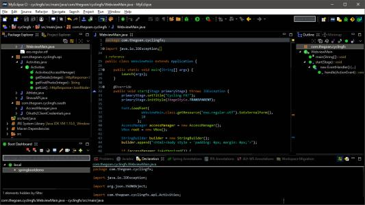
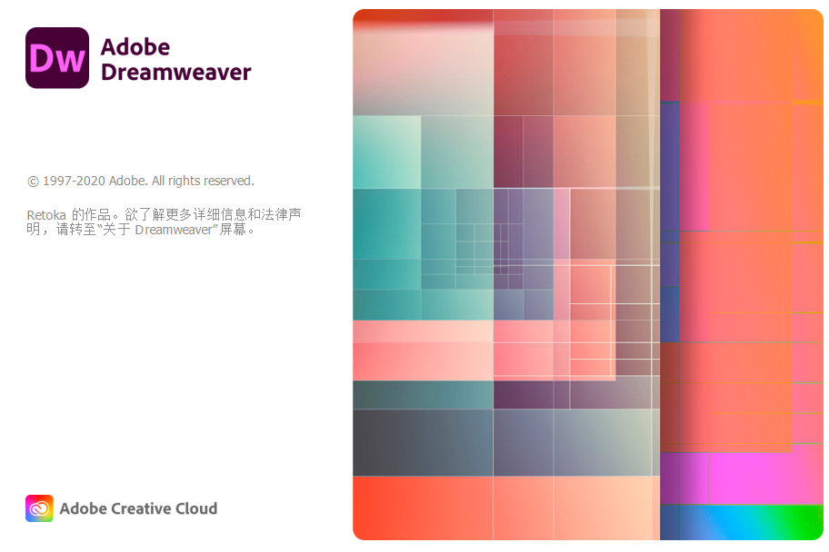

MyEclipse 2017
MyEclipse，是在eclipse 基础上加上自己的插件开发而成的功能强大的企业级集成开发环境，主要用于Java、Java EE以及移动应用的开发。MyEclipse的功能非常强大，支持也十分广泛，尤其是对各种开源产品的支持相当不错。
立即下载
前往查看

Dreamweaver 2021
Dreamweaver简称“DW”，是一款专业的网页设计软件，集网页制作和网站管理于一身的即时检索的网页代码编辑器，利用对 HTML、CSS、JavaScript 等内容的支持，设计人员和开发人员可以在几乎任何地方快速制作并发布网页。借助经过简化的智能编码引擎，轻松地创建、编码和管理动态网站。
立即下载
前往查看
Adobe Premiere Pro 2020 v14.3.2 直装版
Photoshop，简称”PS”，是一款常用和功能强大的图像处理软件。主要处理以像素所构成的数字图像。使用其众多的编修与绘图工具，可以有效地进行图片编辑工作。PS有很多功能，在图像、图形、文字、视频、出版等各方面都有涉及。
立即下载
前往查看